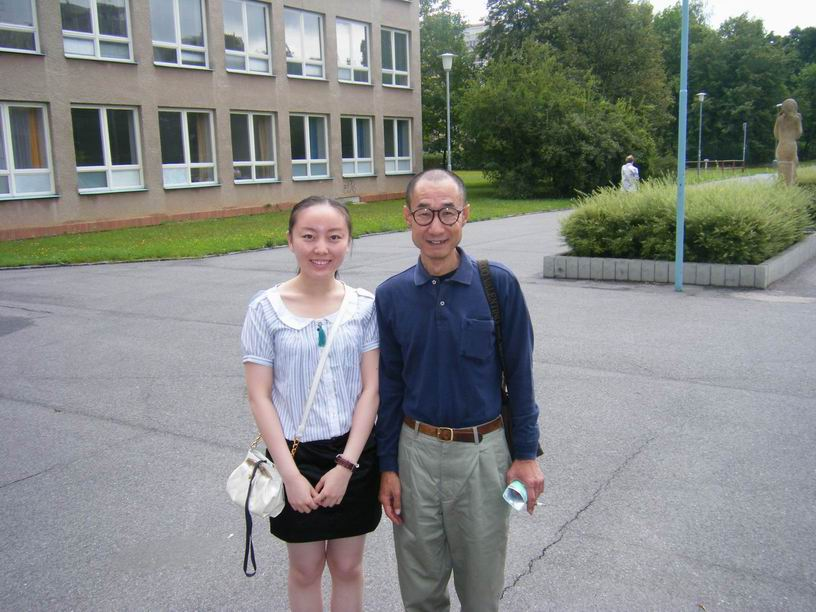
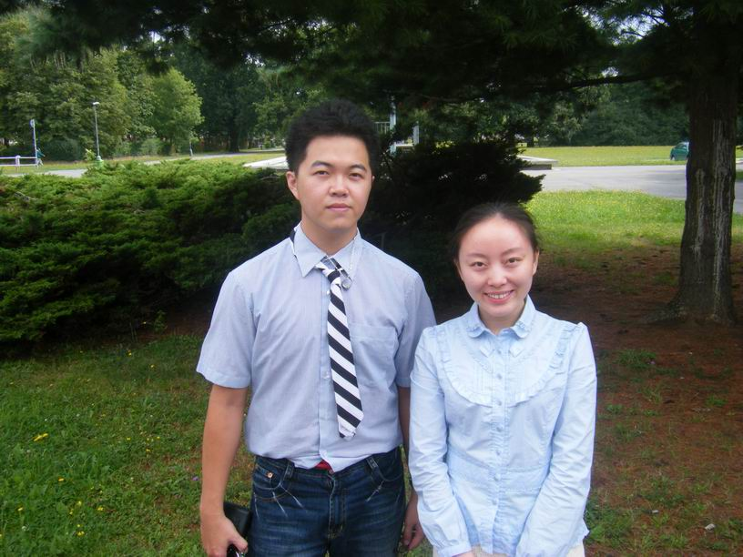
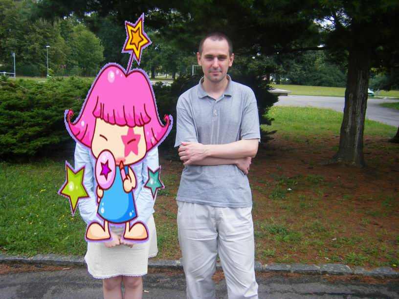
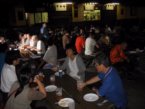
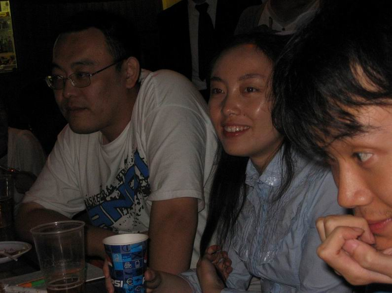
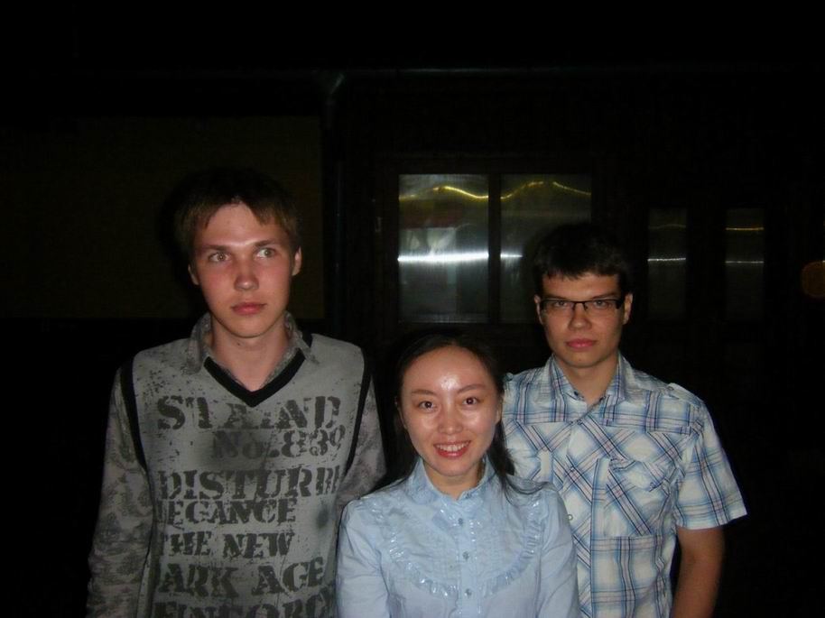
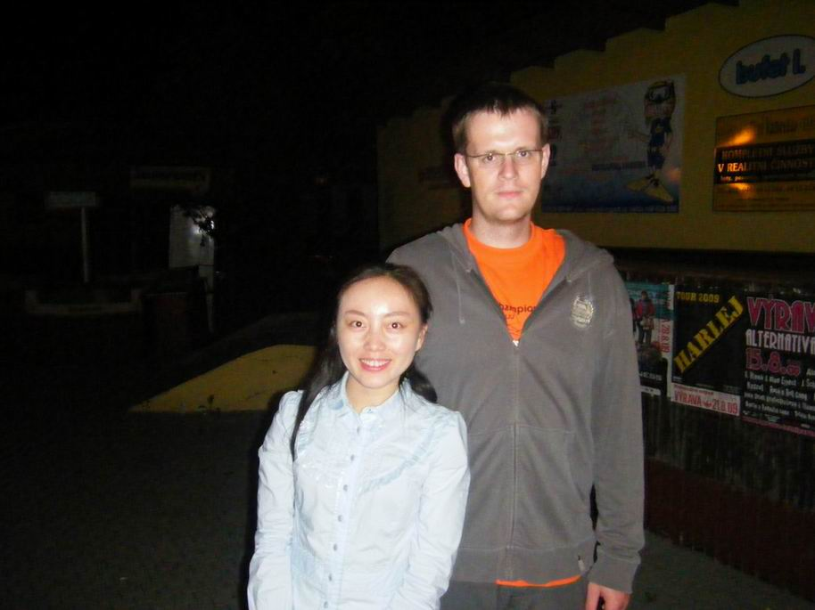
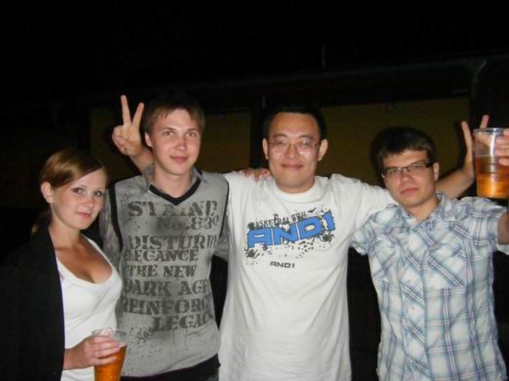
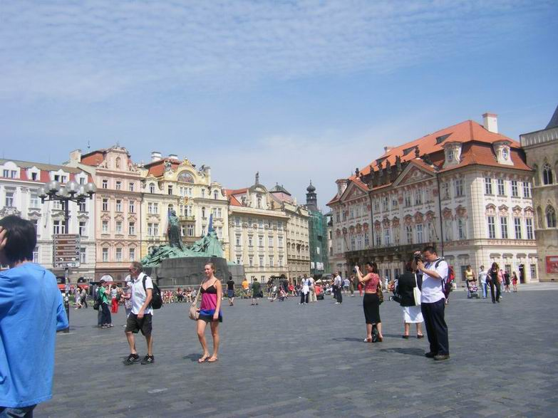

热热闹闹的世锦赛是场繁华的五子棋盛宴，散场过后，我独自坐在伦敦的机场里，心里不禁有点感伤。
在英国留学的同学们，大都会有去欧洲游玩的计划，因为会比以后从国内出发便宜很多。在选择目的地的时候，我并没有特别想去的地方，直到想起了世锦赛。我混迹于五子棋多年，然而几乎没有下过棋，选择参加世锦赛完全出于功利的目的：1.国内很多人想去而不能去，我不能错过这么好的机会；2.趁此机会逼迫自己学习一下五子棋；3.锻炼心理承受力：不能因为惧怕垫底而不参加任何比赛；4.以后写简历的时候可以把这段经历发挥一下。其实直到在赛场交报名费的前一刻我还在犹豫要不要真的报名。幸亏我说服了自己：重在参与，我已经在场了还不报名，连安茨都会不高兴的。
出发
去巴尔杜比采的行程是我特意为了考验自己而定的最省钱的方式。 我凌晨3点半起床，拖着行李箱，步行将近半小时到去伦敦的大巴站。到了伦敦后再转green line到luton机场，坐两个小时的飞机到布拉格，下了飞机后搭机场大巴到布拉格的主火车站，再搭火车去巴尔杜比采，下了火车坐公车去和他们会合……
在英国的这段行程还没什么问题，到了捷克后，第一个难题就是坐火车，那里的火车票和英国的不一样，而且都是捷克语，我不会看。好不容易逮到了一个听得懂我问题的帅哥，他很好心地帮我查好是坐哪辆火车，在哪个站台坐。
坐上了火车，我有幸预览了布拉格的美景：那些美丽的建筑、那条河、还有山上的城堡。一路上，火车在旷野里奔驰，一望无际。不久便有厚重的乌云压了下来，只在天际还留有一抹亮光。我不禁想了我的梦境：我独自站在旷野里，天空电闪雷鸣……
快到巴尔杜比采的时候，大雨倾盆而下，伴随着低沉的雷声。下车时，有位好心的大叔用捷克语跟我说了好些话，示意我先下车，然后把我的行李箱从上面递给我。当时我心里竟有一丝的不放心，怕我下车后他不把行李箱递给我，随后则为自己的这种想法感到羞愧――什么时候开始对别人如此得不信任了。拿到了行李，连跟他说了好多句thank you。
由于下雨，我拖着行李躲在火车站里远眺公交车站。火车站边上有3、4个公交车站，所以虽然我已抄下了公交车号，还是不知道该冲向哪个。问了好多人，都不会说英语，于是我只好硬着头皮把事先学的几句捷克语用了出来，终于找到个好心人给我指点了方向，还冒雨带我走到了那。下了公交车后，再次用捷克语问路。我只知道他们住的是university hostel，没想到一大片的楼都是hostel…… 好不容易找到了reception，找到了他们住的楼号和房间号，可是我放眼望去只有A、B、C、D楼，并没有他们住的E楼。回到reception，由于两位大妈不会讲英语，又折腾了一个多小时，通过Ales的帮助，终于找到了他们。
行程总历时：14小时。
至此，我觉得已经享受完来捷克的乐趣了，比赛有不有趣已与我无关，因为我就是喜欢独自一人拿着地图，拖着行李箱，在一个完全陌生的地方寻找要去的方向的这种感觉。
［ 无尽 于 2009-8-16 8:19:08 时奖励此帖[金币加 20 威望加1］
［ 无尽 于 2009-8-16 8:26:33 时花20金币送鲜花一朵］
［ 有志青年 于 2009-8-16 8:50:34 时花20金币送鲜花一朵］
［ 失落刀 于 2009-8-16 9:03:39 时花20金币送鲜花一朵］
［ 流逝 于 2009-8-16 10:43:53 时花400金币送鲜花20朵］
［ 雪飞 于 2009-8-16 11:12:27 时花20金币送鲜花一朵］
［ 孤竹 于 2009-8-16 14:25:38 时花60金币送鲜花3朵］
［ aabb 于 2009-8-16 15:55:13 时花20金币送鲜花一朵］
［ 纳米 于 2009-8-16 16:44:13 时花20金币送鲜花一朵］
［ nara 于 2009-8-16 17:18:55 时花20金币送鲜花一朵］
［ 梦婷 于 2009-8-16 19:58:35 时花20金币送鲜花一朵］
［ 刀魂 于 2009-8-16 21:33:59 时花20金币送鲜花一朵］
［ 行云流水 于 2009-8-18 16:51:42 时奖励此帖[金币加 20 威望加1］
［ 聊城蓝剑 于 2009-8-19 5:22:47 时花20金币送鲜花一朵］
［ 雨一直下 于 2009-8-19 10:00:36 时花60金币送鲜花3朵］
［ 傀儡 于 2009-8-19 21:47:36 时花20金币送鲜花一朵］
比赛
距上一次（也是唯一一次）参加比赛已有5年了。那是第二届浙江邀请赛，被我的师父董伟伟连哄带骗地去凑数女子组。当时女子组没几个人，有一个弃权，我总共赢了两盘，所以是第五名。由于名次看起来不错，这就成了我的“辉煌”战绩。之后的几届浙江赛，我都是作为工作人员过去帮忙打杂，比如做做台签、开开发票、传传棋谱、打扫卫生、主持开幕式、客串B组裁判。
一想到今年回国就得找工作了，上班后想参加比赛都不一定行了，去浙江赛帮忙也不一定有空了，所以想抓住学生时代的小尾巴再次体验一下比赛。
最开始的几天是QT，没我的事，本想趁这几天在捷克到处旅游，但我的懒惰心理让我留在了赛场。这几天我的最大用处是帮QT的选手们看包、偷拍几张照片、以及在论坛里时不时地播报几条比赛消息。当时和我同样无聊的就是中村茂了，他连网都没得上，只能到处遛达，所以我得以和他进行了多次眼神交流…… 看着别人紧张地比赛，而自己的比赛时间还未到的感觉，就像是高一、高二时，看着高三的学生备战高考，而自己还有些许好时光时的窃喜。
女子组比赛开始的时候，我实在不相信我这样的菜鸟能在比赛中赢棋，所以我给自己定的基本目标是：打破零分；最高目标是：不垫底。当理所当然地输完最先三轮时，我发现有两盘我原本竟然可以简单胜――3步的VCT和4步的VCF。这个发现让我的情绪有点波动，原来我竟然有机会胜的，而我错过了这么好的机会，接下来还可能有机会吗？我太懊恼了，懊恼地想哭，想弃权直接回英国了。冷静之后，我告诉自己，下棋的时候要顽强，选择了进攻就要顽强地攻下去，别再功败垂成了。之后的一盘对乌克兰的MM，我就坚持这个原则，在想由进攻转为防守以求和棋的时候，我喝了杯咖啡，去外面转了一圈，楞是再放了颗子扩大黑棋优势，当时想：宁可攻死也不能窝囊死，反正我就是个拿零分的菜鸟，我是菜鸟我怕谁～ 最后，我真的赢了！我太兴奋了，我竟然也能赢棋！
至此，我的第二个目标也实现了。
我想，比赛最大的乐趣就在于能在短时间内体验剧烈的喜怒哀乐吧。
一些人
Ales
他是我决定去世锦赛后联系的第一个人，发过几封邮件咨询些问题，也是我在巴尔杜比采见到的第一个能正常沟通的人。在reception极端无助的情况下，负责接待的大妈终于打通Ales的电话，我得以和他通话，5分钟后来接我找到了中国选手。
我得承认，这回在捷克，由于我交了报名费，而且是“客人”，所以真的很懒。在QT的这几天，只管自己玩，看着Ales成天忙来忙去，虽然心里想过帮忙，可终究没开口。
他是捷克五子棋联盟的director，也是这次组委会的负责人，所以大事小事都是他在干，反正没见他闲过。我问他要过上网的密码，问他讨过纸杯，要他叫过出租车，向他交过报名费，跟他转达过对于台湾事件的抗议…… 他给我印象最深的就是赤着膀子，在大中午的时候一个人把好几张大桌子搬来搬去，把一个房间整理成“电脑室”。力气很大，做事很快，能力很强，身材很好…… 在开幕式和闭幕式的时候，他都穿着军装，应该是当过兵吧，否则怎么会这么有军人的气质。
我特别喜欢他在闭幕式上的创意：给每位女子组选手发了一朵玫瑰和一块巧克力，让每位棋手都上台领了证书和大合照，让我这样的菜鸟挺有“感觉”的。
后来在安茨送我的连珠杂志上看到了关于他的信息，杂志上称他是捷克五子棋联盟的"Super Boss"，捷克五子棋有他这样的人是极其幸运的事。
AKI
这是个很漂亮的爱沙尼亚MM，是坦克的女朋友，目前级位是15级，有可能升为14级。
前文说了，我在QT的时候极其无聊，就在这时候碰上了会说英文的她。她问我有没有为这次比赛准备了没有，我告诉她没有，我是个very beginner，她听了后没说什么，我就以为她是高手，随后又见她和Yulia热情拥抱，很熟的样子，我就想，她肯定是高手了，要不怎么和Yulia这么熟。
女子组和A组开始比赛的第二天，我被秒杀后去帮大鱼买饮料，和老板娘比划完拿了饮料，一转头看到了她，她问我这饮料多少钱，哪种口味好吃，我说我也不知道，应该都不错吧，于是她和我买了一模一样的一杯。路上她问我比得怎样，我说零分，我问她怎样，她做了个零分的手势，我立马有种惺惺相惜的感觉，并祈祷她继续零分（请原谅我这种阴暗的心理）。
我跟她说这饮料我是给吴镝买的，她说她是给Andry买的，然后像想起什么似地跟我说：“就是那个和吴镝在下棋的人。”我听了后就大笑，我跟你可真是太有缘了。她也笑着说："It's so funny. We are buying for the opponents."
和她比赛的那盘，我开了个云月，她下棋基本不太想，所以我也落子飞快，套了两个八卦后我轻松获胜，当时我的钟上显示的剩余时间为2小时02分。ANTS看到我之后开玩笑说我这盘是"super winning"。可是我出来后一回顾这盘棋，吓出了冷汗――她之前有个很简单的双杀，只要她稍微思考一下就能看到了。后来她被裁判批评了：“有两小时的时间呢，你下这么快干什么。”
我也找她说我们都下得太快了，她说：“我不喜欢多想。”我问她：“你经常下棋吗？”她说：“是的，经常，但都只是在比赛的时候下。我平时不喜欢练棋，因为练习了以后会有心理压力，不练的话就可能轻松地下。”我说：“我也是……我也只在比赛的时候下棋，这是我最近五年内的第一次比赛……”
我跟ANTS聊天的时候谈起了她，ANTS说她的确是个很NICE的人，可是看不到她在五子棋上的任何潜力。由于她是坦克的女朋友，所以对于参加比赛很热情，坦克去比的时候她也会比，所以爱沙尼亚颁给了她15级（爱沙尼亚实行的是15级制度），看在她比了这么多场的份上，在考虑给她升为14级。
本想和她合张影的，但是，她是美女嘛，所以，嘿嘿。
Ants & Peter
Ants是我的老朋友啦，所以我一有参加世锦赛的想法时就高调地告诉他了，主要是想从他地方得到点鼓励
除了Ales，他们俩是这次比赛最忙的人。Peter负责A组直播和上传A组、B组的谱，Ants则负责上传女子组和Gomoku的谱，并且更新现场的那块大大的积分榜。
也正是这两人让我这个成天在赛场傻乐的人静下心来透视些表面下的东西。
那天当我赢了Aki之后乐巅巅地跑出赛场时，碰上Ants刚从洗手间出来回A组赛场。他把我叫住，问我比赛结果，闲聊了会儿，他叫我把我和Aki的谱传到网上。我告诉他Aki告诉我不想让Ants把她的这盘比赛传到网上。可能是Ants当时心情就不好吧，跟我说：“那好吧，我来传。”我察觉到了他的不高兴，于是我立刻说：“不用，我来传，你给过我帐号。”他故意问：“你还记得帐号和密码吗？”我说：“当然了，我存在邮箱里呢。”
传完后，我发现他还没回A组赛场，我就跑去告诉他搞定了。他可能是稍微欣慰了一点，就和我聊了几句，聊着聊着坐在了楼梯上。我觉得他可能有话跟我说，于是陪着他坐下聊天。果然，他感到很郁闷，不是因为累，而是因为某些复杂的问题。我是个小人物，我无法解决他的烦恼，所以只能宽慰他，让他有个可以诉说的人。聊着聊着聊到了中国，我跟他讲了些中国目前的好形势，他听了比较开心，然后跟我讲到了交流的重要性，并说要把我介绍给Peter，Peter平时忙自己的工作，没有时间了解中国，正好让我稍微跟他讲讲中国的发展形势。
Peter和我聊天的时候很认真，带了笔和本子，让我心里小小地紧张了一下，怎么也没思索出什么值得让他做笔记的话。Peter也比较郁闷，跟我讲了点瑞典的内部矛盾，并说羡慕中国啊，那么多人下五子棋，瑞典都没多少人下，而且青少年比较缺乏。我告诉他，中国人口基数大嘛（谁叫你们人少呢）。然后他说想了解中国可又苦于没有渠道。我说安度啊，他不是会中文嘛，爱伏啊，他不也会嘛，叫他们多去看论坛，好传达信息给你。然后他开心地笑了，说：“对啊，那个***，在中国工作了挺久了，虽然现在在韩国工作，不过也会中文的。”他一连提了好几遍那人的名字（我没记住），看来是有意抓他看论坛了。
和他们的谈话，让我感到隐隐的悲哀――五子棋，仍然是孤独的。很久以前我在某舞蹈论坛上看舞蹈大赛的视频，有人在论坛上评论：“舞蹈是孤独的项目，台上的和台下的都只有圈内人。”五子棋不也是这样吗，下棋的，和看棋的，都是圈内人。对五子棋保持恒久热情的，愿意为五子棋付出的人，不就那么几个吗？如果Ants说他不干了，Peter也罢工了，那下一届的世锦赛怎么办？
而虽然是这么个小项目，却存在着不少矛盾，Ants和Peter的很多烦恼都是老调重弹，却没人能帮助他们解决，他们比我们更觉孤独。
其他人
对于我这个没见过世面的人来说，这回来的阵容挺庞大了，主要是因为来自世界各地，非常international～
台湾同胞们很可爱。卢炜元同学非常活跃，极其健谈，在闭幕式后party上的表现，让我恨不得用“上蹿下跳”来形容他了。林皇羽同学很乖，被小姚和小胡忽悠地玩疯狂猫里奥，在她们的指导下小心翼翼地摸索了很久，给我们带来了巨大的喜感。毕竟是同胞啊，看到就觉得很亲切～
说到这，要提提斯洛伐克的小帅哥。由于休息区只有一个电源，所以大家的笔记本都是抢占靠近电源的那张桌子。由于中国代表团有我这么一位经常被秒杀的家伙在，所以咱们的两台笔记本总能抢到地盘。那个斯洛伐克的小子很神奇，每次都比我抢得早，所以他经常混在我们一堆中国人里，看起来傻头傻脑的，因为从没跟我们聊过天。可是当我们玩疯狂猫里奥时却很感兴趣地一直在边上看，看得心痒痒的，于是我就问他要不要传一份给他，他很开心地把邮箱地址给了我，我和殷老师就凑过去看他玩，并指导他。他记性很好，之前看到的几个陷阱都记住了。（我很期待他回国后把这个游戏发扬光大）他很友好地问我中文的“谢谢”和“再见”怎么讲，很认真地把读音记在了记事本里，还不断跟我说：“我应该学点中文的，那样就可以和你们交流了”。最让我感动的是，当负责比赛照相的摄影师过来给他拍照的时候他跟摄影师说：“Chinese girls are nice.” 我那激动啊～～～不过最后摄影师还是没给我拍照。 闭幕式的时候，我们发现，他竟然是Gomoku BT的冠军。大鱼点着他大叫：“疯狂猫里奥！”我立刻起身打着闪光灯给他拍了N张照片，让他最后感受一下nice的Chinese girl对他的友好。
闭幕式的时候，我们发现，他竟然是Gomoku BT的冠军。大鱼点着他大叫：“疯狂猫里奥！”我立刻起身打着闪光灯给他拍了N张照片，让他最后感受一下nice的Chinese girl对他的友好。
日本棋手们很重礼节，送了我们日本的连珠杂志，还有他们带来的小礼物。我很后悔，我什么东西也没带，唉～
俄罗斯的MM们很漂亮，爱沙尼亚的也不错，那个乌克兰的MM也很有气质。怪不得Ales说所有参加女子组的MM都很漂亮呢～
当然，帅哥们更多啦，因为男棋手占绝大多数嘛，让我在各赛场巡回遛达时大饱了眼福。
小人物
一直很羡慕会下棋的人，尤其是下得好的人。我这么个不会下棋的人，不能像高手们那样为自己的集体争光，除了帮忙打打杂之外，没什么好做的，而来英国之后又许久没有出力。我通常认为自己是属于五子棋圈子的人，却又质疑自己存在的意义。
去过世锦赛之后，我发现，小人物也是五子棋集团的重要组成部分，我们能做的事情有很多。安茨在连珠杂志上号召大家一起发展GOMOKU的时候就说：“如果你会作曲或者唱歌，那么你就可以写一首GOMOKU的歌，然后像麦当娜那样唱给全世界的人听。当然有这么大才华的人是少数的，如果你能向你的家人或朋友介绍GOMOKU的话，那就是很大的贡献了。”
我想，我也是可以做点事情的，比如说继续打杂、翻译点文章、在爱五子棋看帖时记得回帖……
我想，像我这样的小人物还是很多的，我们可以做片绿叶，让那些花朵们更加鲜艳。
感受
大家都很友好，很好接近，一点都没有我想象中的高傲自大。比赛的氛围很轻松，不像国内那么严格，大家可以随意走动和旁观（比如我就经常在女子组的赛场里看到曹冬的身影）。由于裁判人员不够，所以棋手们出去抽烟和上卫生间都没人跟着。这可以归结为这场比赛的缺点，但当棋手们都足够自觉的时候，这就成了种怡人的文化。这也是我感到这场比赛有乐趣的重要原因之一。
当初我告诉别人我要去捷克待上13天，而且是去巴尔杜比采这样的小城市时，大家都觉得不可理解，连签证官都不理解，我也不确定会不会后悔。但是现在我非常庆幸参加了这次世锦赛，而不是选择去欧洲各大景点走马观花。这13天让我体验了一种完全不同的生活，就像暂时的与世隔绝，沉浸在五子棋中。幸运的是，这段生活让我觉得很美好。
回到英国，我第一时间给Ales发了份感谢的邮件，因为对别人劳动成果的肯定会让别人感到更加高兴 （未经他允许公开，但我相信他不会介意的）
2009/8/14 zj_hjb <zj_hjb@126.com>:
>
> Just to say thank you for your wonderful organisation. You are a very nice,
> friendly, and able person. You managed everything so well.
> I had an excellent time in the tournament, much better than I expected. I
> enjoyed it so much that I even wish to have the opportunity to be in the
> next WC tournament.
> Thank you!
>
> Jiabei He
Thank you very much!!!
I am looking forward to seeing you again, it was very good to talk to
chinese players and especially you
A.
祝愿连珠更加美好，棋手更加快乐
我敬佩的就是能写很多很多原创文字的人,先顶后看...
我也很敬佩~，就像亲临其境，这些文字无可替代，送花
又看了1遍,写的真的很好很强大.鲜花我是没钱送了,威望我就2个,只能送你1个,谁告诉我怎么送啊.
发自内心的说,五子棋圈子里多些像楼主这样的人,会更好.
亲爱的各位看帖且回帖，有花送花，有威望送威望的朋友们，我，我太感动了
你们是最可爱的人～～～～
［ 水月 于 2009-8-16 10:57:46 时花20金币送鲜花一朵］
楼主你也很可爱，抱抱。看了这些文字，就好象自己身临其境一样，谢谢美女。
秀秀，别这么客气，叫老鬼替我抱抱
晕。。。。。。
写的很有趣，很好
哇，好辛苦哦。
引用：加贝我爱你，哈哈
原文由 舍露里 发表于 2009-8-16 9:30:17 :秀秀，别这么客气，叫老鬼替我抱抱
引用：呃，虽然不知你尊姓大名，不过我也免费送你个老鬼的拥抱
原文由 思棋 发表于 2009-8-16 15:05:46 :引用：加贝我爱你，哈哈
原文由 舍露里 发表于 2009-8-16 9:30:17 :秀秀，别这么客气，叫老鬼替我抱抱
［ 雅匪 于 2009-8-16 19:35:12 时花20金币送鲜花一朵］

 这么好的原创文字后面,不留名 实在是损失!!
这么好的原创文字后面,不留名 实在是损失!!一句话我很感动。。安茨在连珠杂志上号召大家一起发展GOMOKU的时候就说：“如果你会作曲或者唱歌，那么你就可以写一首GOMOKU的歌，然后像麦当娜那样唱给全世界的人听。当然有这么大才华的人是少数的，如果你能向你的家人或朋友介绍GOMOKU的话，那就是很大的贡献了。”
真的五子棋真的太寂寞了。
很想能有更多的人下五子棋，关注五子棋。。
始终觉得太有魅力与智慧了。
可是她的发展还是很失败。。
大学时候由于我是那种一大早起床泡杯茶开电脑就下棋的人。课都基本不上。。
我很想带动班级里的人下五子棋，可到毕业了除了我还是没有一个人下五子棋。。
楞是没人喜欢。没人可下
真的很伤人郁闷。。
也许是我太失败了发动不了他们。 。
到现在也还是除了电脑就只能自己与自己私下拆着玩
为什么是要我去抱她们，你回来了自己去抱吧
有心人把此文翻译成英文,日文,捷克语,俄文,发向全世界....
认真看完所有段落，有很多地方很感动！太感谢Beijia He！原本想说几句,确不知从何说起！
或许这就是此时无声胜有声吧！
31楼的同感啊！
五子棋圈子寂寞吗
孤独?
看了文章以后
觉得
非常有人情味
引用：
原文由 耳痛 发表于 2009-8-17 10:27:12 :五子棋圈子寂寞吗
孤独?
看了文章以后
觉得
非常有人情味
寂莫是那里来的,哥们,我跟你解释一下?
把下棋当作一种快乐,那么,棋友之间的交流就是一种最大的快乐!但是,棋友之间聚会,比赛后的分手是很残酷的,到最后,你还是要一个人面对自己的生活?所以,这时的人生是最寂莫的!就像jiabei He在飞机场等飞机时那种心情吧.
引用：
原文由 小丸.net 发表于 2009-8-17 12:25:55 :引用：
原文由 耳痛 发表于 2009-8-17 10:27:12 :五子棋圈子寂寞吗
孤独?
看了文章以后
觉得
非常有人情味
寂莫是那里来的,哥们,我跟你解释一下?
把下棋当作一种快乐,那么,棋友之间的交流就是一种最大的快乐!但是,棋友之间聚会,比赛后的分手是很残酷的,到最后,你还是要一个人面对自己的生活?所以,这时的人生是最寂莫的!就像jiabei He在飞机场等飞机时那种心情吧.
。。。这。。。。。说大了吧。。。。。好像和JIABEI说的不是一种寂寞..........
呵呵 我也认真完整的看完了， 楼主是个美女啊 强烈要求图文并茂！
发现了一个亮点。。；能力很强，身材很好……
写的非常好呀！ 纯朴的文笔却描绘了每一个细节和场景的真实~~~
我也不知道怎么送东西！ 但是观后很感动呀~~
支持加呗MM~~~
繁华散后是伤感。
五子棋，虽然有些孤独，但是因为有这些执着的棋手，所以才会显得美丽。
缺少点照片！
期待～～～～～
这次比赛，咱们中国代表团的摄影师是殷老师，所以我的相机没拍什么照片，他地方的照片我得在全国赛的时候问他拷过来…… 发几张我相机里的和官网上转载的照片（原文无法编辑了）
见到中村的第一天，抢在大鱼和曹冬之后，我也凑上去和神合了张影，如果这张照片当场就洗了出来的话，我肯定会问他要个签名
和活泼的卢炜元同学
比赛的最后一天，我轮空，他结束得很早，我们就到室外拍照片玩
和我和卢炜元一起出去的就是这个疯狂猫里奥，
我和卢炜元的照片是他拍的，我和他的照片是卢炜元拍的，他和卢炜元的照片是我拍的，后来我们三人的照片是叫一个大姐拍的
拍完之后发现，这家伙怎么那么上照啊！！！怪不得摄影师那么喜欢给他拍照。我还是闪了吧，就当他的单人照好了。

来源于官网的闭幕式之后的party情景，大家可以从这张照片里依稀辨认出某些人

珍贵的照片――我们采访中村的现场实拍（来源于官网）
借此抱怨一下：采访中村前，曹和吴已经吃完了若干面包、鸡肉、香肠、饮料，而我，才吃了半块鸡肉，直到离开PARTY的时候，那一整条香肠我都没动
由帅哥到僵尸的瞬变
左：Andry，右：坦克
Andry当时如果看清楚这张照片的话肯定会要我删掉的

能力很强，身材很好的Ales！！
他身高193，体重不详，此图中脸略有变形

最后，以一张万众瞩目的美女图压轴
这张照片就不用多介绍了

最后，用布拉格老城广场的一角画上个明媚的句号。

更多照片请访问：
http://www.piskvorky.cz/fotogalerie/index.php?album=2009%2Fwc_2009
以及，殷老师的存储卡尤利娅 五子第一美女